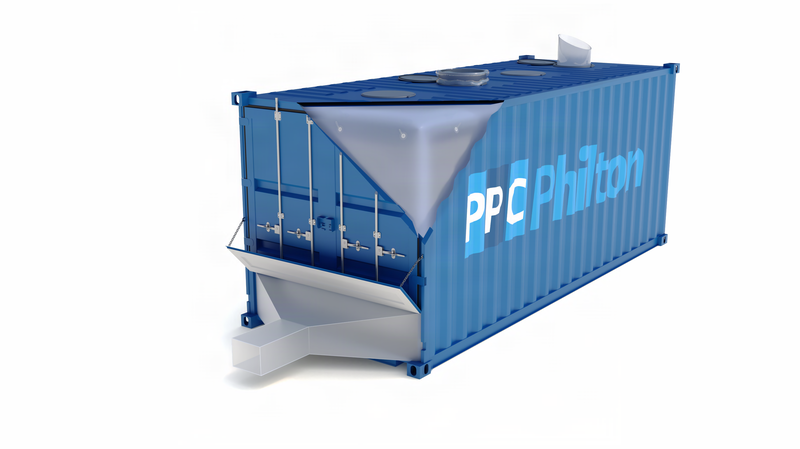
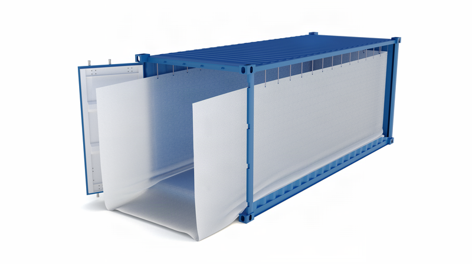
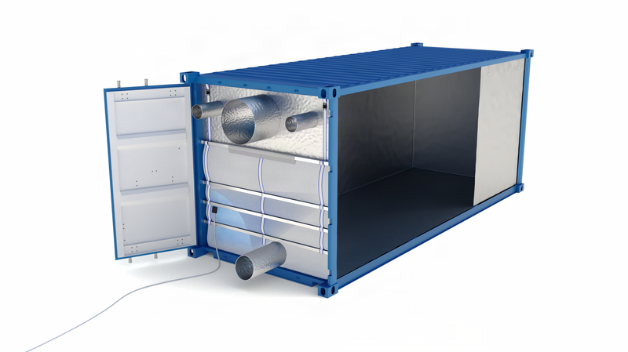
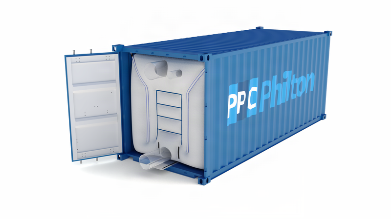
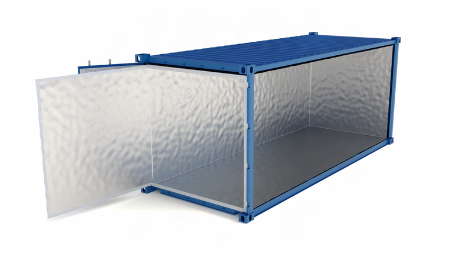
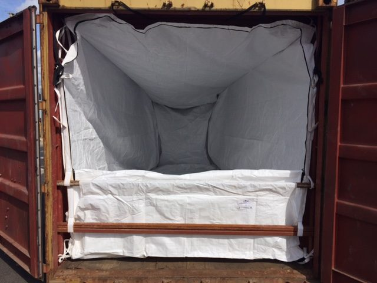
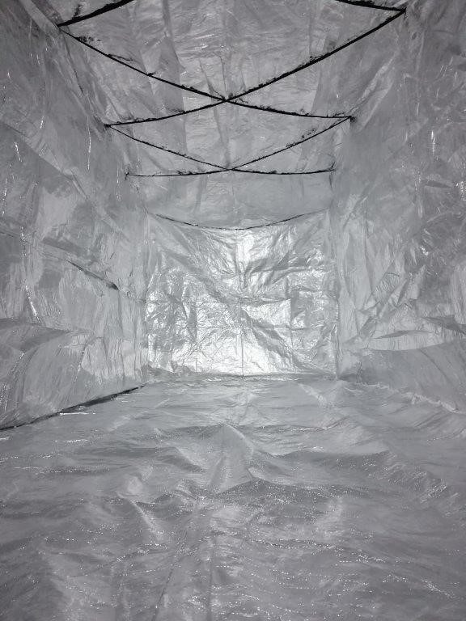

Dry bulk packaging
Dry Bulk Container Liners
Turn a standard 20′, 40′ or 45′ shipping container into sealed bulk transport for free-flowing dry cargo — eight liner types engineered around the commodity, not a generic fit.
Overview
Eight liner types, one certified standard.
Also known as liner bags or sea bulk liners, every format shares the same manufacturing standard: food-grade co-extruded LLDPE film or woven HDPE/PP fabric, customisable loading and venting spouts, and production in our ISO 9001/14001/22000-certified facilities.

Back Fill Liners
Door-end loading for granular, seed, grain and pellet products.

Top Fill Liners
Top-hatch loading, bottom discharge for European/Scandinavian bulkers.

Open Top / Open Ended
Protects containers from palletised, bagged or loose materials.

Foil Liners
Aluminium-laminated barrier, ~80× more moisture protection than 125mu PE.

Barless Liners
Internal baffle system removes the need for metal bulkhead bars.

Fluidising Liners
Air-aeration system for compactable materials like fly ash and talc.

Thermal Liners
Reflects over 90% of radiant heat for temperature-sensitive cargo.

Bulkhead Sheets
Cost-effective rigid barrier for lower-value dry bulk commodities.
Applications
By commodity, not just by container.
Grains, seeds & pellets
Back fill and top fill liners handle the majority of agricultural bulk commodities.
Powders & compactables
Fluidising liners for cement, calcium carbonate, flour and similar hard-to-discharge materials.
Temperature-sensitive cargo
Thermal and foil liners protect against heat and moisture damage on long routes.
Lower-value bulk commodities
Bulkhead sheets offer a cost-effective barrier where a full liner isn't justified.
Benefits
Why shippers convert standard containers.
No dedicated bulk fleet
Any standard 20′, 40′ or 45′ container becomes a bulk carrier — no specialist hopper wagons or bulk vessels required.
No cross-contamination
A single-use liner removes the cleaning and contamination risk of a shared dry bulk container.
Recyclable components
Standard film and fabric options are fully recyclable, manufactured under ISO 14001.
Engineered, not generic
Eight distinct formats mean the liner is matched to the commodity's flow characteristics, not a one-size-fits-all sheet.
Technical information
Materials & specification
| Material | Property | Typical use |
|---|---|---|
| Food-grade co-extruded LLDPE | Moisture barrier | General dry bulk, food-grade cargo |
| Woven HDPE / PP fabric | High strength, low cost | Higher-load, lower-value commodities |
| Antistatic / dissipative LLDPE | Static control | Dust-sensitive or explosive-risk powders |
| Aluminium barrier foil laminate (PE/PET/Al/PE) | Moisture & odour barrier | Foil liners, moisture-sensitive products |
| Aluminium foil bubble laminate | Thermal insulation | Thermal liners, temperature-sensitive cargo |
Product gallery
Dry bulk liners in the field






Downloads
Spec sheets & brochures
Dry bulk liner range overview
PDF · product range & specification
FAQs
Dry bulk liner FAQs
Related products
You may also need


Need a liner spec for a new commodity?
Tell us the material, moisture sensitivity and container type — we’ll recommend the right liner.